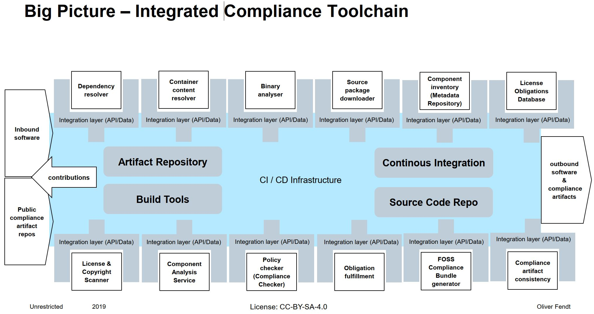

Overview
The use of OSS in products, services and other offerings is increasing exponentially, additionally the release cycles of products and services become shorter and shorter. To cope with this situation an as much as possible automated compliance toolchain needs to exist.
When we talk about product developement and a CI/CD toolchain for it, we need also to integrate all other tools, which are necessary for product developement or which contribute to product development into the CI/CD toolchain, otherwise the product release will be slowed down significantly by the not integrated processes, which are necessary to release a product. Up to now in many companies these, so called supporting, processes are often not integrated in the CI/CD toolchain and are sometimes not as automated as they could be. This applies also to the OSS compliance process.
In other words the OSS compliance process needs to be as automated as possible and the used tools for OSS compliance need to be fully integrated in the develpment CI/CD toolchain. This requires that the different tools need to provide suited APIs to be plugged in easily into the different developement toolchains. Moreover more and more publicly available services and data sources dealing with OSS compliance matters, these need also be considered and integrated in this workflow.
To have an integrated OSS compliance process means not only the process to produce the compliance artifacts for outbound products, also contributions back to the OSS ecosystem have to be integrated to ensure that contributions can be fedback in a timely manner.
To build an integrated end to end compliance toolchain is not about to build a monolithic monster, it is about to use current available Open Source tools and define and implement the needed APIs/Data structures they need to provide, in order to plug them into the current set up CI/CD workflow and to enable them to trigger other Open Source compliance tools in a way that they seamlessly interact which each other and potential external data sources.
Building a monolithic monster will not work neither for the project that aims to build it nor for most of the entities that have a demand in tooling. This is proven by many other projects which had this objective no matter whether they were OSS or commercial ones. We follow the "Unix" like aproach - there is one tool for a certain required functionality which is specialized on that functionality and these different tools can be hooked up easily to form in the end a complaince pipeline. This is also the most suited strategy to get those tools widely adopted since many entities have some tooling available and an existing landscape, they simply cannot go for a "big bang" migration, a smooth migration is key here.
 Abstract Toolchain